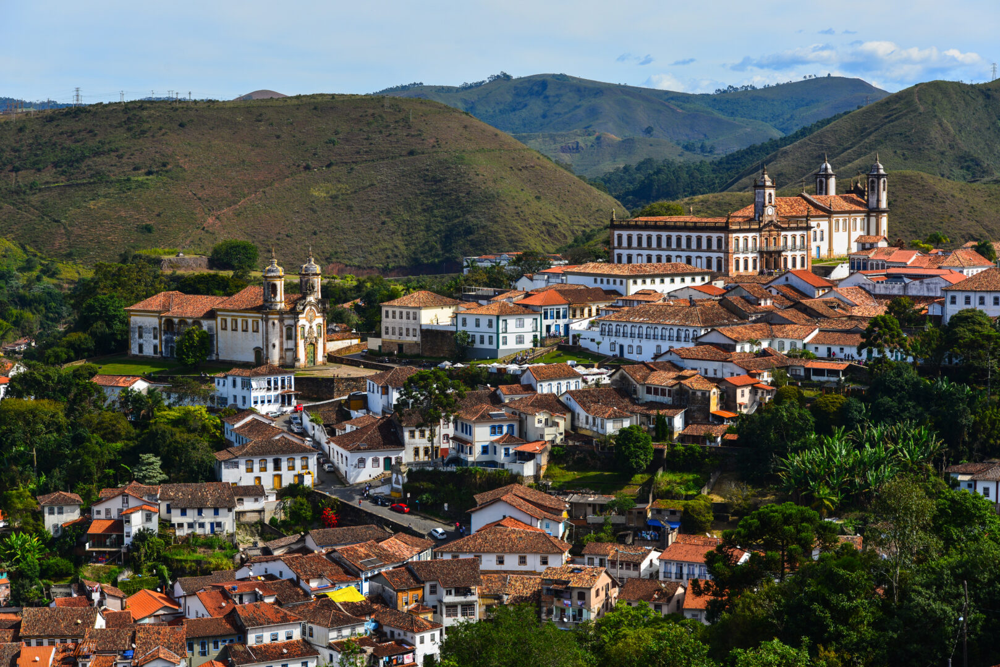
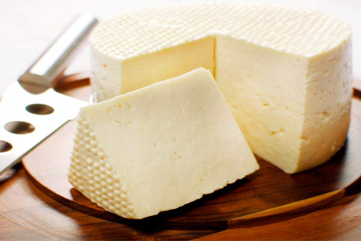
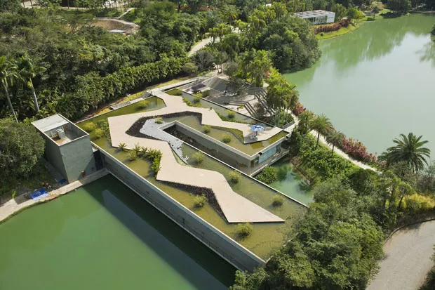
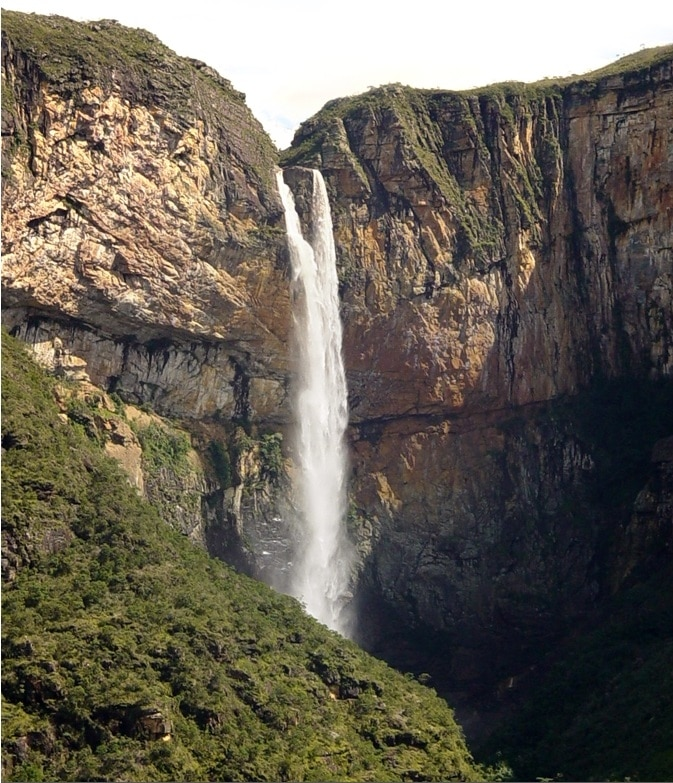

Curiosidades
 O queijo minas foi nomeado “Patrimônio Cultural Imaterial Brasileiro” pelo Instituto Patrimônio Histórico Nacional (IPHAN).
 O Instituto Inhotim é a sede de um dos mais importantes acervos de arte contemporânea do Brasil e considerado o maior museu a céu aberto do mundo. Está localizado em Brumadinho.
 Temos a 3ª maior cachoeira do país, a Cachoeira do Tabuleiro; 3 dos 5 maiores picos do Brasil, começando pelo famoso Pico da Bandeira; abrigamos o 3° maior complexo de lagoas que este território nacional já viu